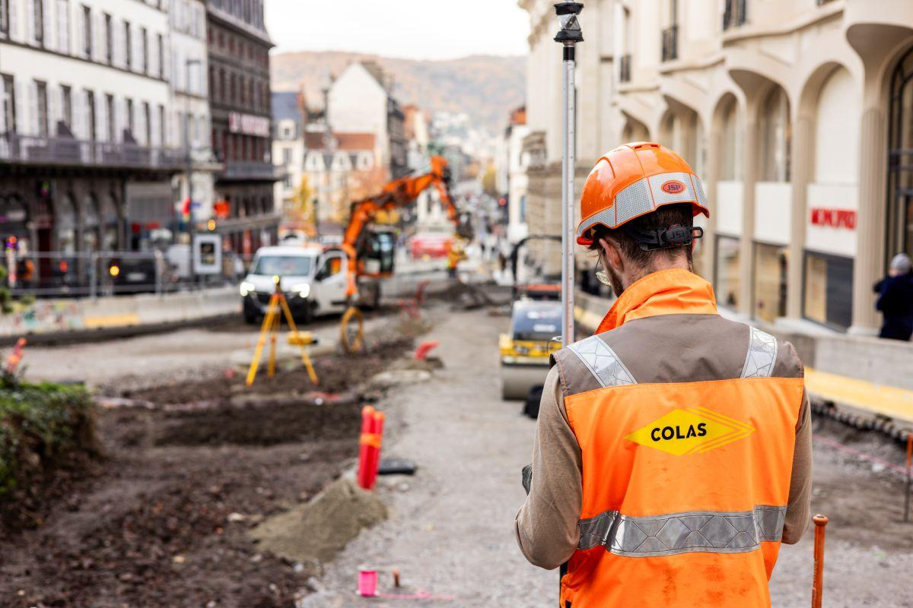

Réaliser et exploiter des relevés
Comprendre le site, identifier les points importants, exploiter les données et les transformer en support de conception.
Entreprise · Stage · Alternance
Cette page présente les compétences développées lors de mes expériences professionnelles : stage de deuxième année, alternance, missions de bureau d’études, relevés topographiques, plans, métrés, réseaux, chiffrage et gestion de contraintes réelles.

Posture professionnelle
En entreprise, les compétences ne sont pas seulement techniques. Il faut comprendre une demande, poser les bonnes questions, anticiper les contraintes, produire des documents exploitables et adapter son travail aux délais, aux échanges internes et aux attentes du client.
Mon expérience en bureau d’études m’a permis de mieux comprendre le rôle du géomètre-projeteur : transformer des données de terrain et des contraintes de projet en plans, métrés, chiffrages et pièces compréhensibles pour la suite de l’opération.
Compétences entreprise
Comprendre le site, identifier les points importants, exploiter les données et les transformer en support de conception.
Travailler sur voirie, réseaux, eaux pluviales, éclairage public ou télécom en respectant les contraintes du projet.
Quantifier, vérifier les cohérences, préparer des éléments pour une offre et comparer les solutions possibles.
PDF intégré